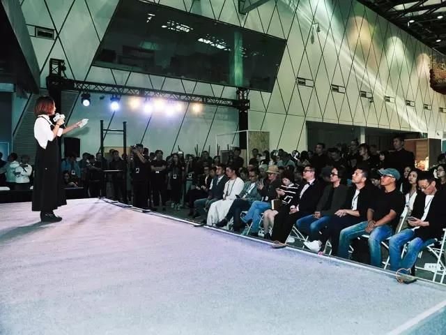
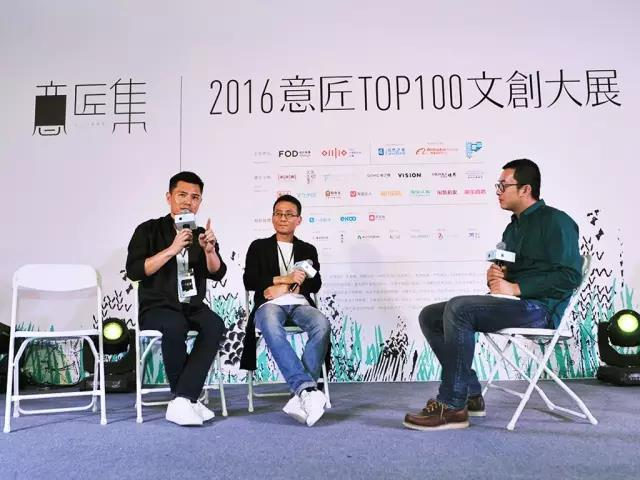

- 官方信息
官網
yijiangji.com官方郵箱
vip@yijiangji.com官方微信
官方指定信息渠道
@意匠集官方微博
@意匠集
- 地址信息
- 組委會地址
- 北京朝阳区酒仙桥
- 路甲12号电子城大厦2层
- 聯繫人信息
- 策劃聯繫人
- 張子建 微信 zijnss
- 商務合作聯繫人
- 王 璇 微信 ondesign

新浪微博

微信
中国最顶尖的文创饕鬄盛宴！
9月28日“橙色事变”炫动京城！
盛况空前的意匠产品集合展——“意匠集”在北京三里屯太古里橙色大厅盛大开幕。此次大展为期五天，集合了中国100位顶尖意匠，在展示其原创作品的同时，大展也旨在探索一条全新的“匠心拯救商业”道路。

在主持人宣布开幕仪式启动之际，由特邀视觉艺术家秦树义先生带来的精彩火焰魔术表演开场。创意十足的开幕方式将意匠集从一开始就推向了一个小高潮。随后，代表着意匠精神和推动着意匠行业发展的传奇铁匠蔡德全作为意匠代表进行了发言。CDS中国设计师沙龙主席顾鹏作为主办方代表也发表了致辞，并携全体幕后发起人集体亮相。
活动现场，“意匠集”组委会颁发了“2016中国新锐意匠知名商业领路人”特别荣誉，中国领先的家居生活主题购物中心——居然之家因对推动意匠行业的杰出贡献，获得了这一殊荣。
在现场沙龙环节，本次活动的发起人之一、FOD设计装备的创始人王璇作为沙龙主持，与到场的嘉宾就意匠行业发展的现状和对未来趋势的理解，进行了轻松又深入的交流。
第一个《创意产品如何步步进入市场》主题沙龙中，居然顶层设计中心的林莺华女士表示，“意匠集”这种与生活方式有关的尝试，是非常有意义的，也希望能有更多机会与艺术家和设计师展开合作。
太古里副总经理陈洁女士表示，太古里作为时尚潮流的风向标，更关注设计和创意的概念，并在较高的层面对意匠品牌做出了自己的判断。国际知名珠宝设计师刘斐先生则指出，意匠更应该关注目标人群，先有现金流、先找到有消费能力的人群，再去关注有消费意愿的人群，才是一条正确的道路。
在《文创产业的春天来了吗？》这个沙龙环节中，中国手艺发展中心主任赵普提到了平台对于匠人的重要性，他认为，有了互联网这个平台，传统手艺经过发展，春天必然会首先在互联网这个平台上来临的。
手作艺人东家APP的董事长朱见山也表示，聚集了优秀匠人的平台，才会有强大的力量，才会影响更多的人关注意匠的作品，从而推进行业发展。

随后蔡德全先生、台湾手工咖啡壶品牌Bi.du.haev创始人王旋先生和禅意琉璃艺术家梁明毓先生，三位意匠还与大家分享了各自是如何改变自己，静心造物的心得。
开幕式的最后，现场意匠和工作人员还参与了“匠人拯救计划万人签名”活动。
此次中国顶尖意匠TOP100的原创产品大展，吸引到了包括梵几、哲品、黑川雅之、素元、蔡澜花花世界、STUDIO 4℃、Fei Liu Jewellery、艺集、bi.du.haev等在内的100位顶尖意匠，倾心展出了他们最新、最富创意、最精心制作的产品。
“意匠集”组委会秉持着“让消费级商品不仅满足一时的使用需求，更成为审美生活的最重要组成部分，从升级消费到升级生活”的基本标准，最终从数以万计的手作匠人、独立设计师和创意人的原创产品中挑选出100个意匠品牌。
因而，这绝不仅是一次大规模意匠创意的展示，更是其对生活美学的诠释与实践。
本次大展的展品涵盖吃、穿、用、戴等生活的各个方面，产品都是经过设计师精心设计、精致打磨，可以说品质明显高出市场同类产品，虽然价格也相应稍高一些，但这并没有影响参观者的购买欲望，很多参观者表达了对高品质家居生活用品和原创意匠产品的喜爱，在与设计师亲密互动之后，不少参观者向现场工作人员咨询购买方式，流露出强烈的消费升级意愿。
充满强大生命力和匠彩内涵的意匠作品、标志性商业中心北京三里屯太古里、中国超大规模的文创大展，“意匠集”由此迈出了全新的“匠心拯救商业”道路的第一步。
有参与开幕式的业内人士表示，“意匠集”是这个秋天北京的一次“橙色事变”，甚至“成为中国创意产业发展过程中的一次标志性事件都是极有可能的”。
“意匠集”由FOD设计装备、CDS中国设计师沙龙、居然之家和阿里巴巴集团等联合主办。韩国著名设计师白金男教授、古田路9号北京站李吉峰、等嘉宾出席了开幕式。
本次展会会持续到10月2日！就在三里屯橙色大厅！
官網
yijiangji.com官方郵箱
vip@yijiangji.com官方微信
官方指定信息渠道@意匠集
官方微博
@意匠集
新浪微博
微信